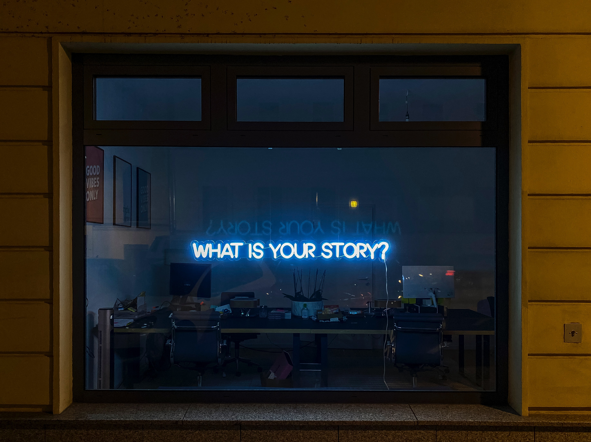

Personal Introduction
My Story
Hi, I am Shaistha. This is my story into the world of ML Privacy and Security. It all began in late 2019 when I first got selected for Udacity's SPAI (Secure and Private AI ) Challenge, later becoming one of the 300 scholars to be selected for the Nanodegree Scholarship Program - Computer Vision Nano Degree.
The scholarship program - Computer Vision Nano Degree did have some fun fundamental projects like - Facial Keypoint Detection, Automatic Image Captioning and Simultaneous Localization and Mapping (SLAM)- 2D Lane Detection BUT the best part was how much of an impact it had made on my personal life, teaching me the importance of community involvement and leadership skills ( Student Leader of #women_who_code channel) and teamwork.
Luckily, I could grab an AI internship ( Prashikshan ) at Tata Steel, which in turn has given me profound exposure to the industrial level applications of AI and the difficulties faced during that period. For me, it was a lack of proper data, as it was a new project. The project mainly focused on Anomaly Detection and Health Monitoring of the DC Rot. Motors based on their input currents with future scope for predictive maintenance, which lit my interest in Signal Processing ( used it for better Data Visualization and understanding ).
I later joined OpenMined in late April 2020 as Writing Team member, an open-source community with a goal to make the world more privacy-preserving by lowering the barrier-to-entry to private AI technologies.
I began small, exploring the options. From writing team I got involved with OpenMined's PyDP Project which later led me to join the Differential Privacy Research Team, digging deeper into the concepts and working with an amazing team. Beginner level technical intro was something hard to get and hence I choose to write a Beginner Friendly DP Series, for my passion to write and share knowledge.
I did explore and gain different expereinces working, such as, Webinar Lead for Beta BootCamp, <Organising Member and Co-Ordinator for PriCon2020, personally co-ordinating 60+ speakers from from many of the world’s most important privacy and AI projects around the world: EFF, Signal, MIT, Twitter, DeepMind, FAIR, UCSF, Oxford, The Economist, the Ford Foundation, Inpher, and the United Nations just to name a few, etc.
At present, I am part of the Recommendation Systems Team within the Federated Learning Team of Development Team at OpenMined and also, a Technical Mentor for The Private AI Series. Thanks to my passion for sharing knowledge, I am one of the United Nations (UN) GWG Task Team Members working on Privacy Preserving Techniques representing OpenMined's Writing Team.
Apart from this I am also exploring Android Kotlin for ML Production Ready Applications.
It is just the tip of the iceberg that I have discovered and I look forward to explore deeper into the Privacy techniques such as Federated Learning and Differential Privacy on application level. I am open to new Ideas and techniques and alway thrive to learn and gain knowledge. I believe in #TogetherWeHitHarder and in Sharing knowledge.
It is always great to have a chat. Drop me a DM on Twitter or LinkedIn if you would like to have a chat on ML Privacy or security related topics or share your experience and views.
Happy Learning!
Interests
- Writing Medium Educational Blog Post : Here have a look!
- Reading informational Blog Posts e.g., Machine learning is fun! by Adam Geitgey.
- Watching YouTube videos (E.g. Veritasium, The Lion Whisperer, MIT Courseware - Gilbert Strang, etc.), anime (Naruto being my all-time favorite), English TV shows (Genre - action, thriller, supernatural).
- Calisthenics